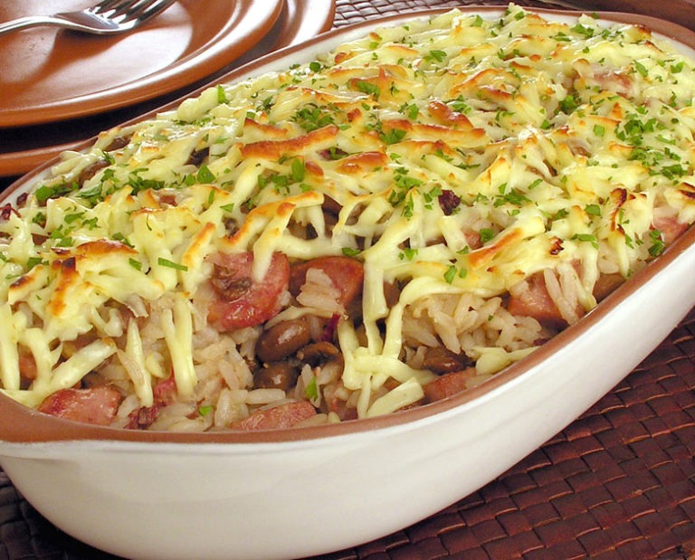

Baião de Dois

Descrição
Que tal preparar uma receita deliciosa em pouquíssimo tempo? Este baião de dois de forno é a escolha certa para surpreender e deixar a sua refeição ainda mais especial!
Ingredientes
- 2 colheres (sopa) de manteiga
- 1 cebola em cubos
- 2 dentes de alho picados
- 1/2 xícara (chá) de carne-seca dessalgada, cozida e desfiada
- 1 gomo de linguiça calabresa em cubos
- 1 e 1/2 xícara (chá) de feijão-de-corda cozido
- 1 xícara (chá) do caldo do cozimento do feijão
- Sal e molho de pimenta vermelha a gosto
- 3 xícaras (chá) de arroz branco cozido
- 1/2 xícara (chá) de queijo coalho ralado
- Cheiro-verde picado para polvilhar
Modo de preparo
- Aqueça uma panela grande com a manteiga, em fogo médio, e frite a cebola e o alho por 2 minutos.
- Acrescente a carne, a linguiça e frite por 3 minutos.
- Despeje o feijão, o caldo, tempere com sal e molho de pimenta.
- Deixe levantar fervura e retire do fogo.
- Acrescente o arroz, misturando delicadamente, e despeje em um refratário médio.
- Polvilhe com o queijo coalho e leve ao forno alto, preaquecido, por 15 minutos ou até o queijo derreter e gratinar.
- Retire e polvilhe com cheiro-verde antes de servir.
Voltar para o Início